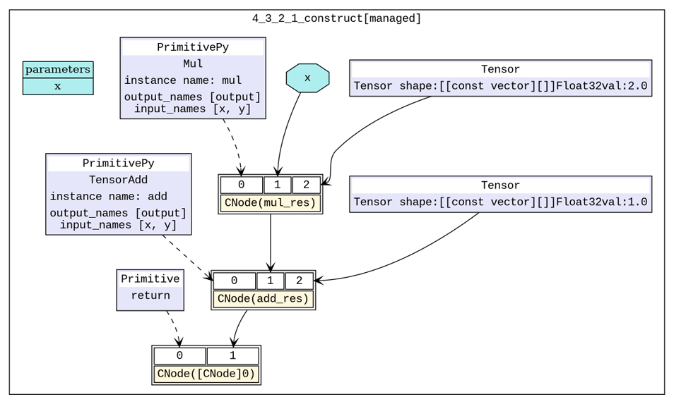

Graph Kernel Fusion
Ascend Model Optimization Intermediate Expert

Overview
The graph kernel fusion is used to analyze and optimize the computational graph logic of the existing network, as well as split, reconstruct, and fuse the original computing logic to reduce the overhead of operator execution gaps and improve the computing resource utilization of devices, thereby optimizing the overall execution time of the network.
The example in this tutorial applies to hardware platforms based on the Ascend 910 AI processor, whereas does not support CPU and GPU scenarios.
Enabling Method
The optimization of graph kernel fusion in MindSpore is distributed in multiple compilation and execution steps at the network layer. By default, the function is disabled. You can specify the enable_graph_kernel=True parameter for context in the training script to enable the graph kernel fusion.
from mindspore import context
context.set_context(enable_graph_kernel=True)
Sample Scripts
Simple example
To illustrate the fusion scenario, two simple networks are constructed. The
NetBasicFusenetwork includes multiplication and addition, and theNetCompositeFusenetwork includes multiplication, addition, and exponentiation. The following code example is saved as thetest_graph_kernel_fusion.pyfile.import numpy as np import mindspore.context as context from mindspore import Tensor from mindspore.nn import Cell from mindspore.ops import operations as P context.set_context(mode=context.GRAPH_MODE, device_target="Ascend") # save graph ir files. context.set_context(save_graphs=True) # enable graph kernel fusion. context.set_context(enable_graph_kernel=True) # example for basic fusion. class NetBasicFuse(Cell): def __init__(self): super(NetBasicFuse, self).__init__() self.add = P.TensorAdd() self.mul = P.Mul() def construct(self, x): mul_res = self.mul(x, 2.0) add_res = self.add(mul_res, 1.0) return add_res # example for composite fusion. class NetCompositeFuse(Cell): def __init__(self): super(NetCompositeFuse, self).__init__() self.add = P.TensorAdd() self.mul = P.Mul() self.pow = P.Pow() def construct(self, x): mul_res = self.mul(x, 2.0) add_res = self.add(mul_res, 1.0) pow_res = self.pow(add_res, 3.0) return pow_res def test_basic_fuse(): x = np.random.randn(4, 4).astype(np.float32) net = NetBasicFuse() result = net(Tensor(x)) print("================result=======================") print("x: {}".format(x)) print("result: {}".format(result)) print("=======================================") def test_composite_fuse(): x = np.random.randn(4, 4).astype(np.float32) net = NetCompositeFuse() result = net(Tensor(x)) print("================result=======================") print("x: {}".format(x)) print("result: {}".format(result)) print("=======================================")
BERT-largetraining networkTake the training model of the
BERT-largenetwork as an example. For details about the dataset and training script, see https://gitee.com/mindspore/mindspore/tree/r0.7/model_zoo/official/nlp/bert. You only need to modify thecontextparameter.
Effect Evaluation
To verify whether the graph kernel fusion takes effect, you can compare the changes of the computational graph before and after the fusion is enabled as well as the change of the network training time for one step.
Computational Graph
Basic operator fusion: Analyze associated basic operators on the network. Fuse multiple basic operators into a composite operator on the condition that performance benefits can be obtained. The following uses
NetBasicFuseas an example.pytest -s test_graph_kernel_fusion::test_basic_fuse
After the script execution is complete, you will find some
.dotfiles in the script running directory. Use thedottool to convert the.dotfiles into.pngfiles for viewing.6_validate.dotandhwopt_d_fuse_basic_opt_end_graph_0.dotare used to generate the initial computational graph and the computational graph after basic operator fusion.As shown in Figure 1, there are two basic operators in the initial computing of the constructed network. After the graph kernel fusion function is enabled, the two basic operators (
MulandTensorAdd) automatically compose one operator (composite operator). In Figure 2, the upper right part is the composite operator after fusion. Currently, the network only needs to execute one composite operator to complete theMulandTensorAddcomputing.
Figure 1 Initial computational graph
Figure 2 Computational graph after basic operator fusion
Composite operator fusion: Analyze the original composite operator and its related basic operators. The original composite operator and a basic operator compose a larger composite operator on the condition that performance benefits can be obtained. The following uses
NetCompositeFuseas an example.pytest -s test_graph_kernel_fusion::test_composite_fuse
Similarly,
6_validate.dot,hwopt_d_fuse_basic_opt_end_graph_0.dot, andhwopt_d_composite_opt_end_graph_0.dotare used to generate the initial computational graph, the computational graph after basic operator fusion, and the computational graph after composite operator fusion.As shown in Figure 3, there are three basic operators in the initial computing of the constructed network. After the graph kernel fusion function is enabled, the first two basic operators (
MulandTensorAdd) automatically compose one operator (composite operator) at the basic operator fusion stage. As shown in Figure 4, the upper right part shows the composite operator after fusion, and the lower left part shows a basic operatorPow. At the subsequent composite operator fusion stage, the remaining basic operator (Pow) and an existing composite operator are further fused to form a new composite operator. In Figure 5, the upper right part is the composite operator after the three basic operators are fused. Currently, the network only needs to execute one composite operator to complete theMul,TensorAdd, andPowcomputing.
Figure 3 Initial computational graph

Figure 4 Computational graph after basic operator fusion

Figure 5 Computational graph after composite operator fusion
Training Time for One Step
BERT-large scenario: After the graph kernel fusion function is enabled for the BERT-large network, the training time for one step can be improved by more than 10% while the accuracy is the same as that before the function is enabled.